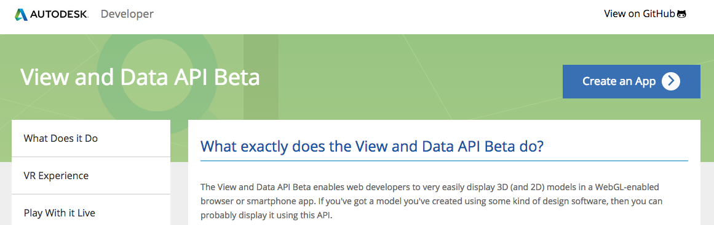
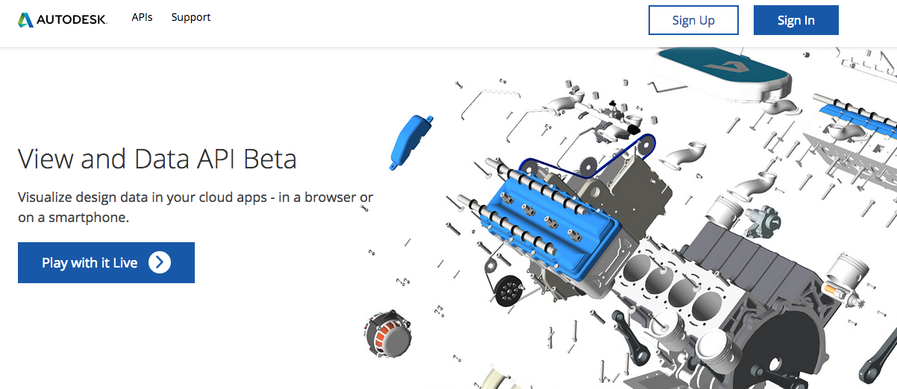

Web从此走入3D时代
- 基于HTML5/WebGL的3D模型浏览技术探讨
杜长宇
About Me
杜长宇 Daniel Du
Sr. Developer Consultant @ Autodesk
1860 050 3761
我们的互联网，就像韩国选美
- 看起来很美，可惜都一样...
- 看起来很美，可惜只能看、不能摸...
我们要什么样的互联网？
- 好看、好玩儿、个性化
- 二维平面 --> 三维立体
- 静态图片 --> 可交互内容
有这样的网站吗？
先轻松一下，请静心欣赏


Click Here for Demo -AEC | Click Here for Demo -car
我要上三维，告诉我怎么做？
答案就是.....
WebGL
无需任何插件
几乎所有现代浏览器都支持

但是WebGL也不是那么简单
有没有更简单的...
给大家介绍几种在线三维模型浏览工具
让我们贴近观察Autodesk Viewer...
上传你的模型
在浏览器和移动设备中浏览
简单、而且免费使用!
什么东东？ 现在试试...
https://360.autodesk.com/viewer支持的数据格式
ipt, neu, stla, stl, xlsx, jt, jpg, skp, prt, dwf, xls, png, sldasm, step, dwg, zip, nwc, model, sim, stp, ste, f3d, pdf, iges, dwt, catproduct, csv, igs, sldprt, cgr, 3dm, sab, obj, pptx, cam360, jpeg, bmp, gbxml, exp, ppt, doc, wire, ige, rcp, txt, dae, x_b, 3ds, rtf, rvt, g, sim360, iam, asm, dlv3, x_t, pps, session, xas, xpr, docx, catpart, stlb, tiff, nwd, sat, fbx, smb, smt, ifc, dwfx, tif
还在继续增加中...
模型 + 属性数据

还提供编程接口
View and Data API
REST API
- 身份认证
- 模型上传
- 格式转换
JavaScript API
- 相机控制
- 获取属性信息
- 用户事件处理
- 属性信息搜索
- 自定义用户界面
- ...
详细看API ？
代码出没，请注意
详细看看
算了，下次吧
服务器端API - REST
服务器端提供基于REST的API，用于模型的身份认证、模型上传、转换等
- 在http://developer.autodesk.com 注册一个App,申请ConsumerKey/Secret
- 获取Access Token（OAuth 2.0）
- 创建Bucket用于模型的存储
- 上传模型文件到Bucket
- 请求云端进行模型格式转换
- 查询转换进度(可选)
- 获取模型缩略图(可选)
服务器端REST API示例：
- 示例：Quick Start Guide
- 工具：在线模型上传工具
- Github - http://github.com/developer-autodesk上众多示例：
repo name: workflow-*-view.and.data.api
WinForm, ASP.NET WebForm, ASP.NET MVC, Node.JS(JavaScript), Python, Ruby, Curl, JSP, Android, iOS(ObjectC), Mac(Swift)
服务器端API - 类库
客户端JavaScript API
在你的页面上
引用如下 JavaScript Libraries:
<link rel="stylesheet" href="https://viewing.api.autodesk.com/viewingservice/v1/viewers/style.css" type="text/css">
<script src="https://viewing.api.autodesk.com/viewingservice/v1/viewers/viewer3D.min.js"></script>创建一个div标签作为容器，id为"viewer"
<div id="viewer"></div>使用JavaScript来初始化
function initialize() {
var options = {
'document' : 'urn:dXJuOmFkc2sub2JqZWN0czpvcy5vYmplY3Q6bXlidWNrZXQvc2t5c2NwcjEuM2Rz',
'env':'AutodeskProduction',
'getAccessToken': getToken,
'refreshToken': getToken,
};
var viewerElement = document.getElementById('viewer');
var viewer = new Autodesk.Viewing.Viewer3D(viewerElement, {});
Autodesk.Viewing.Initializer(options,function() {
viewer.start();
loadDocument(viewer, options.document);
});
}token
function getToken() {
return "GX6OONHlQ9qoVaCSmBqJvqPFUT5i";
}你应该写一个获取token的服务，这里只是为了演示而hardcode.
loadDocument()
function loadDocument(viewer, documentId) {
// Find the first 3d geometry and load that.
Autodesk.Viewing.Document.load(documentId, function(doc) {
var geometryItems = [];
geometryItems = Autodesk.Viewing.Document.getSubItemsWithProperties(doc.getRootItem(), {
'type' : 'geometry',
'role' : '3d'
}, true);
if (geometryItems.length > 0) {
viewer.load(doc.getViewablePath(geometryItems[0]));
}
}, function(errorMsg) {// onErrorCallback
alert("Load Error: " + errorMsg);
});
}总共不超过60行代码，即可把一个可交互的三维模型嵌入到你的网页中。
简单、快速
详细在线教程：
https://github.com/Developer-Autodesk/tutorial-getting.started-view.and.data
浏览器端API - 更多API
漫游控制、显示/隐藏、相机视点控制、爆炸显示、屏幕截图、用户事件响应、自定义界面...
示例代码
http://developer-autodesk.github.io
众多示例程序供您学习参考!
可能的应用场景
- 物业管理
- 电子商务商品展示
- 展品在线虚拟体验
- 生产管理、设备运行监控
- 游戏、虚拟现实
- ...
谁在用View and Data API?

现在就开始
等等... 那些模型数据从哪儿来？
CAD设计师 - AutoCAD 或其他CAD软件
建筑设计师 - Revit 或其他建筑设计软件
机械设计师 - Inventor/Fusion或其他设计软件
3D设计师 - Max、Maya
...
资料
- 实例代码 - http://developer-autodesk.github.io
- ADN DevBlog 博客 - http://adndevblog.typepad.com/cloud_and_mobile
- 有问题,上论坛 - http://forums.autodesk.com/t5/View-and-Data-API/bd-p/95